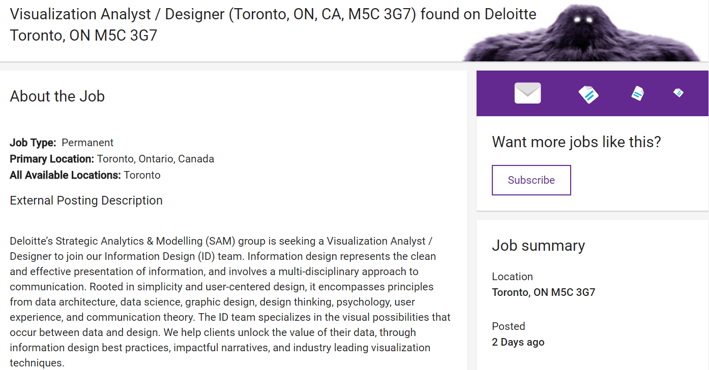

11: Finale
Matt Price
Introduction to Digital Humanities
Course Topics
Digital Humanities: A History
Anatomy of DH Projects
Archives: Endangered, Lost, Banned, Censored Books (visit to Thomas Fischer Rare Book Library)
How to Read with DH Data: Zoom In, Zoom Out, Tell Stories, Play Games
Interfaces, Users, and Usability
Communities, Libraries, and Possible Futures
Learning Goals
Digital Humanities (DH) is a discipline at the intersections of the humanities with computing.
Digital humanists analyze languages through digital text collections; build digital archives of forbidden books; resurrect historical cities through digital maps; or construct video games to study literature.
This year the course focuses on endangered books: fragile, hidden, censored, forbidden. We speak to scholars who build archives of forbidden literature. We visit the Thomas Fisher Rare Book Library. We study rare books’ histories through digital exhibits.
By the end of the course, you will have mastered concepts and technologies you can use in future courses and workplaces: data visualization, data analysis, and digital exhibit platforms. And you will learn how our stories and cultural conversations work and shapeshift through digital environments.
By the end of the course:
You will be able to describe the history and intellectual landscape of the digital humanities, including central concepts, debates, digital tools and platforms current in the discipline.
You will be able to analyze digital humanities research projects across a variety of humanities disciplines
You will have developed critical thinking and a set of best practices around data modeling, datasets, project design and management, and research data management
You will have analyzed and built visualizations and digital maps
You will have researched and authored your own digital exhibit
Job Listing

Requirements vs. Achievements
Job Requirements
Brainstorming solutions to complex business problems through working sessions, wireframing and developing mockups
Developing static infographics and/or interactive data visualizations, that adhere to Information Design best practices, and effectively communicate business insights back to clients
Working through iterative cycles, incorporating feedback and completing user testing and QA
Collaborating extensively with clients and other Deloitte teams
Liaising with data science and data architecture team members to optimize client data for visualization purposes
Managing project timelines and client deliverables
WDW235 Achievements
Completed a major digital exhibit project, from research with banned books from rare book collection, to public-facing digital exhibit about censorship and knowledge transmission
Developed static infographics and an interactive digital exhibit using open-source, high-uptake technologies, adhering to data management best practices, and effectively communicating original artifact analyses to public audiences
Worked through iterative cycles, from proposal pitch to mock-up development, incorporating feedback at each stage
Managed project timelines and multiple deliverables
Continuing in DH
Statistical reasoning
programming skills
close reading
creativity